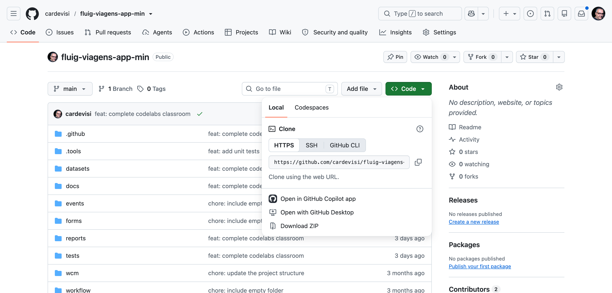
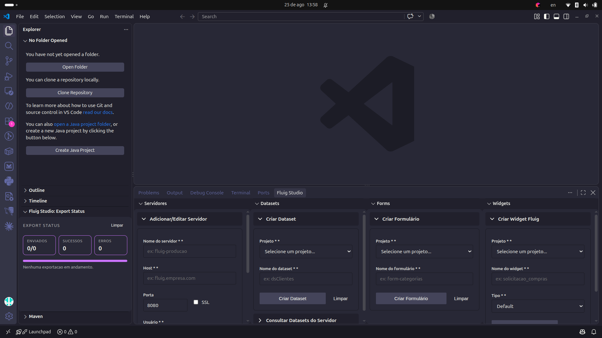
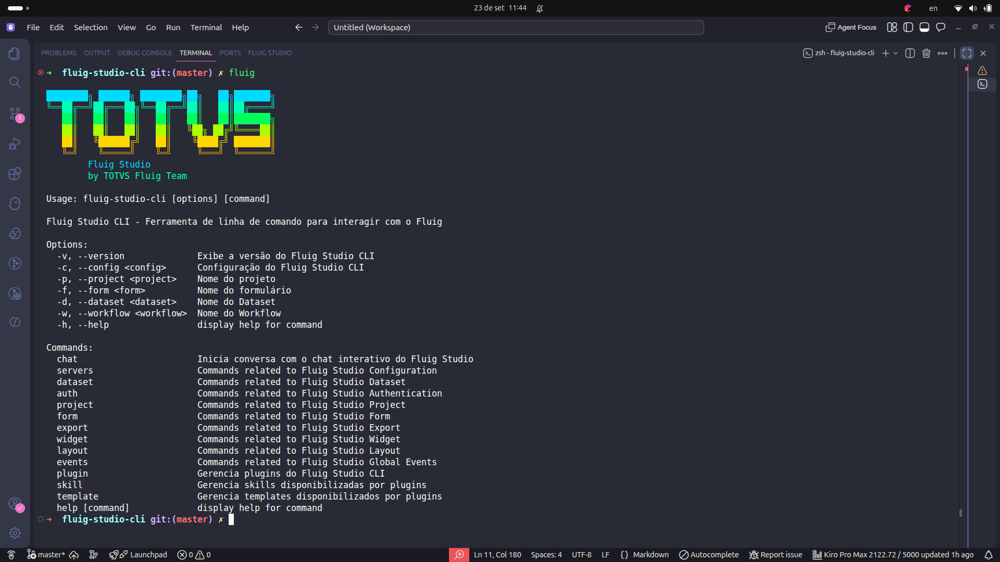

Neste codelab, você vai reconstruir o projeto fluig-viagens-app, acompanhando um fluxo de desenvolvimento que se aproxima de times que precisam publicar com mais segurança e qualidade. Ao longo da aula, você vai entender como combinar implementação, testes automatizados e pipeline de CI/CD para criar uma camada de qualidade antes do envio de recursos para produção. Em vez de focar apenas no código do dataset, a proposta é mostrar o caminho completo: desenvolver, validar, automatizar e preparar a publicação em um servidor Fluig remoto com o apoio do GitHub Actions.
Ao final, você terá um projeto que:
fluig-deploy.yml.ds-viagens-paises-alunoNN.js com o apoio do Kiro.npm test..github/workflows/fluig-deploy.yml.ghcr.io/cardevisi/fluig-cli:0.1.0.fluig-viagens-app-alunoNN/
├── .github/
│ ├── docker/
│ │ └── fluig-cli/
│ │ └── Dockerfile
│ ├── scripts/
│ │ └── fluig-resource-deploy.mjs
│ └── workflows/
│ └── fluig-deploy.yml
├── datasets/
│ └── ds-viagens-paises-alunoNN.js
├── tests/
│ └── datasets.test.js
├── docs/
│ ├── assets/
│ ├── build-codelab.mjs
│ ├── codelab-fluig-viagens-app.md
│ └── proposta-pipeline.md
├── events/
├── forms/
├── reports/
│ └── mechanisms/
├── wcm/
│ └── widget/
├── workflow/
├── .dockerignore
├── .gitignore
├── README.md
├── fluig.json
└── package.json
Os três blocos que você realmente vai mexer na aula são datasets/, tests/ e .github/.
Você vai precisar de:
node --version
git --version
Você precisa ter acesso à organização que hospeda os repositórios da aula:
https://github.com/Projeto-Universo-TOTVS
Confirme com o instrutor que a sua conta GitHub foi adicionada como membro ou colaborador dessa organização antes de seguir para o passo de clone do projeto. Sem esse acesso, o git clone e o git push do seu repositório vão falhar com erro de permissão.
Se quiser se aprofundar no GitHub Actions futuramente, use estas referências:
O ambiente Fluig usado nesta aula é:
https://universo2.nimbvs.fluig.io/portal/p/universo/home
Os dados de acesso (usuários e senhas) estão nesta planilha:
https://docs.google.com/spreadsheets/d/1RPQ9X7SsVMobBEIiodkETqbvEzC32EC1HsAdNXwdtKM/edit?gid=0#gid=0
Cada aluno tem o seu próprio repositório, já criado previamente no GitHub. Você só precisa clonar.
Os repositórios seguem o padrão de nome fluig-viagens-app-alunoNN, dentro da conta ou organização GitHub informada pelo instrutor:
Aluno | Repositório |
Aluno 01 | |
Aluno 02 | |
Aluno 03 | |
... |

Confirme com o instrutor qual GITHUB_ORG (conta ou organização que hospeda os repositórios) e qual ALUNO_ID foram atribuídos a você, e defina as variáveis abaixo. O exemplo usa alunoNN:
GITHUB_ORG="Projeto-Universo-TOTVS"
ALUNO_ID="alunoNN"
REPO_ALUNO="fluig-viagens-app-${ALUNO_ID}"
REPO_SSH="git@github.com:${GITHUB_ORG}/${REPO_ALUNO}.git"
echo "$REPO_SSH"
git clone "$REPO_SSH"
cd "${REPO_ALUNO}"
O origin precisa apontar para o repositório com o seu ALUNO_ID:
git remote -v
git branch --show-current
npm test
Se os testes passarem, o seu ambiente está pronto para o resto da aula.
Antes de começar a implementação, conheça a nova extensão para VS Code para desenvolvimento no Fluig. A seguir, uma visão geral das principais funcionalidades que você poderá usar no seu dia a dia.

Principais recursos da extensão VS Code para Fluig:
Com a visão geral da extensão, veja agora o Fluig CLI em funcionamento. Esse momento é importante para você perceber como a experiência de uso do Fluig CLI se conecta com a automação que aparece mais adiante no pipeline.

Esta demonstração usa uma sequência curta de comandos do Fluig CLI como exemplo:
fluig --help
fluig dataset list
fluig projects list
fluig servers list
Ao acompanhar o terminal, observe estes pontos:
A implementação mínima aqui demostrada tem foco em três blocos:
datasets/: onde ficam os datasets Fluig.tests/: onde ficam os testes automatizados..github/: onde ficam Dockerfile, script de deploy e workflow.Essa estrutura é suficiente para demonstrar como configurar uma esteira completa de desenvolvimento, com testes automatizados e pipeline de CI/CD. Mas você poderá expandir a estrutura de acordo com suas necessidades.
O package.json atual tem apenas um comando de teste:
{
"name": "fluig-viagens-app",
"version": "1.0.0",
"private": true,
"description": "Exemplo mínimo de testes e deploy de datasets Fluig",
"scripts": {
"test": "node --test"
},
"engines": {
"node": ">=20"
}
}
Com isso, basta rodar:
npm test
O fluig.json é o arquivo que concentra os metadados e as configurações principais do projeto Fluig. Em projetos maiores, ele pode reunir informações sobre o projeto, integrações com o CLI e parâmetros usados em processos de automação. Em outras palavras, é um ponto central de configuração que ajuda as ferramentas do ecossistema a entenderem como o projeto deve ser lido e executado.
No modelo atual, o fluig.json guarda apenas o essencial para o script de deploy:
{
"name": "fluig-viagens-app",
"description": "Projeto de viagens com dataset e teste de contrato",
"version": "1.0.0",
"author": "Carlos Oliveira",
"license": "UNLICENSED",
"cli": {
"serverName": "fluig-ci"
}
}
Chave | Função |
| Nome lógico do projeto |
| Descreve de forma resumida o objetivo do projeto |
| Indica a versão atual do projeto |
| Identifica quem mantém ou publicou o projeto |
| Define o tipo de licença associado ao projeto |
| Nome base usado pelo script para criar o servidor no Fluig CLI |
Neste passo você vai criar datasets/ds-viagens-paises-alunoNN.js executando um prompt no Kiro. No Fluig, a função createDataset(fields, constraints, sortFields) devolve um objeto montado com DatasetBuilder.
Na prática, esses parâmetros representam:
fields: as colunas solicitadas pela consulta;constraints: os filtros recebidos na chamada do dataset;sortFields: os campos pedidos para ordenação.Neste exemplo, eles aparecem para respeitar o contrato do Fluig, mesmo sem influenciarem o retorno, porque o dataset devolve sempre a mesma lista fixa de países.
Crie o arquivo datasets/ds-viagens-paises-alunoNN.js (troque alunoNN pelo seu ALUNO_ID) e use o prompt abaixo no Kiro para gerar o conteúdo do dataset:
Crie um dataset Fluig no arquivo datasets/ds-viagens-paises-alunoNN.js seguindo estas regras:
1. Exponha uma função global `createDataset(fields, constraints, sortFields)`.
2. Não use `require`, `import` ou `module.exports`: no runtime do Fluig as globais já existem.
3. Use `var` e sintaxe ES5, compatível com o motor de script do Fluig.
4. Os três parâmetros existem apenas para respeitar o contrato do Fluig. Neutralize-os com
`void fields;`, `void constraints;` e `void sortFields;` e explique isso em comentário.
5. Monte o retorno com `DatasetBuilder.newDataset()`.
6. Declare exatamente 3 colunas, nesta ordem: `codigo`, `nome` e `sigla`.
7. Preencha 20 países como arrays de strings no formato
[codigo ISO-3, nome em português, sigla ISO-2].
Inclua obrigatoriamente ["BRA", "Brasil", "BR"] como primeira linha.
8. Adicione as linhas com `ds.addRow()` dentro de um laço `for` clássico.
9. Retorne o objeto `ds` no final da função.
Resultado esperado:
function createDataset(fields, constraints, sortFields) {
// Assinatura padrão de datasets no Fluig:
// - fields: colunas solicitadas pela consulta
// - constraints: filtros recebidos na chamada
// - sortFields: campos pedidos para ordenação
void fields;
void constraints;
void sortFields;
var ds = DatasetBuilder.newDataset();
var rows = [
["BRA", "Brasil", "BR"],
["USA", "Estados Unidos", "US"],
["ARG", "Argentina", "AR"],
["CHL", "Chile", "CL"],
["URY", "Uruguai", "UY"],
["PRY", "Paraguai", "PY"],
["BOL", "Bolívia", "BO"],
["PER", "Peru", "PE"],
["COL", "Colômbia", "CO"],
["VEN", "Venezuela", "VE"],
["MEX", "México", "MX"],
["DEU", "Alemanha", "DE"],
["ESP", "Espanha", "ES"],
["PRT", "Portugal", "PT"],
["FRA", "França", "FR"],
["ITA", "Itália", "IT"],
["GBR", "Reino Unido", "GB"],
["JPN", "Japão", "JP"],
["CHN", "China", "CN"],
["AUS", "Austrália", "AU"],
];
ds.addColumn("codigo");
ds.addColumn("nome");
ds.addColumn("sigla");
for (var i = 0; i < rows.length; i++) {
ds.addRow(rows[i]);
}
return ds;
}
codigo, nome e sigla.require, porque no Fluig as globais já existem no runtime.Em vez de criar toda a estrutura de teste do zero para cada dataset, o projeto usa uma base reaproveitável de validação:
tests/datasets.test.js
Essa base concentra apenas o que pode ser compartilhado entre diferentes datasets. Ela faz quatro coisas:
datasets/;DatasetBuilder e DatasetFieldType;Isso é útil porque futuros datasets podem ter estruturas e regras de negócio diferentes, mas ainda assim continuarão precisando de algumas validações comuns, como carregamento do script, criação do dataset e consistência entre colunas e linhas.
Antes de olhar o código, vale fixar o padrão que organiza todo teste bem escrito:
Fase | O que faz |
Arrange (preparar) | Configura o cenário, cria os dados necessários e prepara o ambiente. |
Act (agir) | Executa a ação ou função que se deseja testar. |
Assert (validar) | Checa se o resultado obtido é igual ao resultado esperado. |
Neste teste, cada fase tem um papel bem concreto:
DatasetBuilder e DatasetFieldType e executar o script do dataset ali dentro. É o que substitui o servidor Fluig.createDataset([], [], []), exatamente como o Fluig faria ao consultar o dataset.Em vez de colar o arquivo inteiro de uma vez, monte o teste em sete blocos. Cada bloco acrescenta um comportamento, e depois de cada um você roda npm test e vê a suíte crescer.
Crie o arquivo tests/datasets.test.js vazio e vá acrescentando cada bloco ao final dele.
Comece pelos imports e pelas constantes que o restante do arquivo usa. COUNTRIES_PREFIX é o que permite o teste funcionar sem edição, qualquer que seja o seu ALUNO_ID.
"use strict";
const { test } = require("node:test");
const assert = require("node:assert/strict");
const fs = require("node:fs");
const path = require("node:path");
const vm = require("node:vm");
const projectRoot = path.join(__dirname, "..");
const datasetsDir = path.join(projectRoot, "datasets");
// Prefixo dos datasets de países da aula. Cobre qualquer sufixo de aluno
// (ds-viagens-paises-aluno01.js, -aluno02.js, ...) sem precisar editar nada.
const COUNTRIES_PREFIX = "datasets/ds-viagens-paises";
const COUNTRIES_COLUMNS = ["codigo", "nome", "sigla"];
const COUNTRIES_TOTAL = 20;
npm test
A saída mostra # tests 1, mas nenhum teste foi declarado ainda. Esse 1 é o próprio arquivo: o node --test conta cada arquivo de teste como uma unidade. A partir do próximo passo o número passa a refletir os testes de verdade.
O primeiro teste não valida dataset nenhum: ele valida que a suíte encontrou o que precisa testar. Sem ele, um erro de caminho deixaria todos os laços vazios e a suíte ficaria verde sem validar nada.
Junto vêm os dois helpers de descoberta.
// Lista recursivamente todos os arquivos .js da pasta datasets
// para que qualquer novo recurso já entre automaticamente nos testes.
function listDatasetFiles(dir, root = projectRoot) {
return fs
.readdirSync(dir, { withFileTypes: true })
.flatMap((entry) => {
const fullPath = path.join(dir, entry.name);
if (entry.isDirectory()) {
return listDatasetFiles(fullPath, root);
}
if (entry.isFile() && entry.name.endsWith(".js")) {
return [path.relative(root, fullPath).split(path.sep).join("/")];
}
return [];
})
.sort();
}
// Separa os datasets de países dos demais, para que as regras de negócio
// só sejam aplicadas a quem realmente precisa atendê-las.
function filterCountriesDatasets(datasetFiles) {
return datasetFiles.filter((relativePath) =>
relativePath.startsWith(COUNTRIES_PREFIX),
);
}
test("a pasta datasets contém datasets para testar", () => {
// Arrange
const datasetsPath = datasetsDir;
// Act
const datasetFiles = listDatasetFiles(datasetsPath);
const countriesFiles = filterCountriesDatasets(datasetFiles);
// Assert
assert.notEqual(
datasetFiles.length,
0,
"nenhum arquivo .js encontrado em datasets/",
);
assert.notEqual(
countriesFiles.length,
0,
`nenhum dataset encontrado com o prefixo ${COUNTRIES_PREFIX}`,
);
});
npm test
Agora # pass 1, e o nome do teste aparece na saída.
Esta é a cláusula central do contrato com o Fluig: o servidor chama uma createDataset global, então o script precisa declará-la no nível superior. Aqui entram os dois helpers que substituem o servidor Fluig.
// Arrange: monta o contexto com os mocks das globais que o Fluig fornece
// em produção. O mock implementa apenas o necessário para este projeto.
function createFluigSandbox() {
return {
console,
DatasetFieldType: { STRING: "STRING" },
DatasetBuilder: {
newDataset() {
const columns = [];
const rows = [];
return {
addColumn(name, type) {
columns.push({ name, type });
},
addRow(values) {
rows.push(values);
},
getColumns() {
return columns;
},
getRows() {
return rows;
},
};
},
},
};
}
// Act de baixo nível: executa o arquivo exatamente como o Fluig faria.
// Por ser um script (e não um módulo), a declaração `function createDataset`
// no nível superior passa a ser propriedade do objeto global, que dentro
// do vm é o próprio sandbox.
function runDatasetScript(relativePath, sandbox) {
const fullPath = path.join(projectRoot, relativePath);
const code = fs.readFileSync(fullPath, "utf8");
vm.createContext(sandbox);
vm.runInContext(code, sandbox, { filename: fullPath });
return sandbox;
}
test("todo dataset declara a função global createDataset", async (t) => {
for (const relativePath of listDatasetFiles(datasetsDir)) {
await t.test(relativePath, () => {
// Arrange: contexto isolado com as globais que o Fluig injeta.
const sandbox = createFluigSandbox();
// Act: executa o script do dataset dentro desse contexto.
runDatasetScript(relativePath, sandbox);
// Assert: o Fluig chama uma createDataset global, então o script
// precisa declará-la no nível superior para o deploy fazer sentido.
assert.equal(
typeof sandbox.createDataset,
"function",
`${relativePath} deve declarar a função global createDataset`,
);
});
}
});
npm test
O total salta para # pass 3. Esse teste usa t.test() para criar um subteste por dataset, então ele conta como 1 teste pai mais 1 subteste para cada arquivo da pasta.
Daqui em diante os testes precisam chamar a createDataset. O helper loadCreateDataset concentra esse Arrange e devolve a função pronta.
// Arrange completo para os testes de comportamento: devolve a createDataset
// pronta para ser chamada no passo Act. Aqui é `throw`, e não `assert`,
// porque um cenário que não pode ser montado é falha de setup, não de
// expectativa. A existência da função é verificada em teste próprio.
function loadCreateDataset(relativePath) {
const sandbox = runDatasetScript(relativePath, createFluigSandbox());
if (typeof sandbox.createDataset !== "function") {
throw new Error(
`${relativePath} não declarou a função global createDataset. ` +
`Use "function createDataset(...)" no nível superior do arquivo, ` +
`sem module.exports, export ou IIFE.`,
);
}
return sandbox.createDataset;
}
test("todo dataset devolve colunas e linhas consistentes", async (t) => {
for (const relativePath of listDatasetFiles(datasetsDir)) {
await t.test(relativePath, () => {
// Arrange
const createDataset = loadCreateDataset(relativePath);
// Act: reproduz a chamada do Fluig com fields, constraints e sortFields
// vazios, ou seja, a consulta mais simples possível.
const dataset = createDataset([], [], []);
const columns = dataset.getColumns();
const rows = dataset.getRows();
const columnNames = columns.map((column) => column.name);
// Assert
assert.ok(Array.isArray(columns), "getColumns deve devolver um array");
assert.ok(Array.isArray(rows), "getRows deve devolver um array");
assert.notEqual(columns.length, 0, "dataset sem colunas declaradas");
assert.equal(
new Set(columnNames).size,
columnNames.length,
`${relativePath} declara colunas com nome duplicado`,
);
for (const [index, row] of rows.entries()) {
assert.equal(
row.length,
columns.length,
`linha ${index} tem ${row.length} valores para ${columns.length} colunas`,
);
}
});
}
});
npm test
# pass 5. Este é o último teste do contrato genérico: tudo aqui vale para qualquer dataset, sem mencionar país nenhum.
Começam as regras de negócio, aplicadas só aos datasets de países. Repare no filterCountriesDatasets envolvendo a lista: é o que impede que um ds-viagens-cidades.js futuro seja obrigado a ter as colunas de país.
test("todo dataset de países expõe as colunas na ordem esperada", async (t) => {
for (const relativePath of filterCountriesDatasets(
listDatasetFiles(datasetsDir),
)) {
await t.test(relativePath, () => {
// Arrange
const createDataset = loadCreateDataset(relativePath);
// Act
const dataset = createDataset([], [], []);
const columnNames = dataset
.getColumns()
.map((column) => column.name);
// Assert: a ordem faz parte do contrato, não só os nomes. O Fluig
// entrega cada linha como array posicional, sem chave: quem consome
// (formulário, widget, zoom) lê row[0], row[1] e row[2]. Conferir
// posição por posição aponta exatamente qual coluna saiu do lugar.
assert.equal(columnNames[0], "codigo");
assert.equal(columnNames[1], "nome");
assert.equal(columnNames[2], "sigla");
assert.equal(columnNames.length, COUNTRIES_COLUMNS.length);
});
}
});
npm test
# pass 7.
test("todo dataset de países devolve a lista completa", async (t) => {
for (const relativePath of filterCountriesDatasets(
listDatasetFiles(datasetsDir),
)) {
await t.test(relativePath, () => {
// Arrange
const createDataset = loadCreateDataset(relativePath);
// Act
const rows = createDataset([], [], []).getRows();
// Assert
assert.equal(
rows.length,
COUNTRIES_TOTAL,
`${relativePath} deve ter ${COUNTRIES_TOTAL} países`,
);
});
}
});
npm test
# pass 9.
O último teste valida um registro conhecido de ponta a ponta. O assert.ok(brazil, ...) antes do deepEqual existe para a falha dizer "não achei a linha BRA" em vez de estourar um TypeError ao tentar ler undefined.
test("todo dataset de países contém a linha do Brasil", async (t) => {
for (const relativePath of filterCountriesDatasets(
listDatasetFiles(datasetsDir),
)) {
await t.test(relativePath, () => {
// Arrange
const createDataset = loadCreateDataset(relativePath);
// Act
const rows = createDataset([], [], []).getRows();
const brazil = rows.find((row) => row[0] === "BRA");
// Assert
assert.ok(brazil, `${relativePath} não tem a linha com código BRA`);
assert.deepEqual(Array.from(brazil), ["BRA", "Brasil", "BR"]);
});
}
});
npm test
# pass 11.
Os números abaixo valem para uma pasta datasets/ com um dataset:
Passo | O que entra | Testes acumulados |
1 | imports e constantes | 1 (só o arquivo) |
2 | descoberta dos datasets | 1 |
3 | contrato da | 3 |
4 | colunas e linhas consistentes | 5 |
5 | ordem das colunas | 7 |
6 | total de países | 9 |
7 | linha do Brasil | 11 |
Se a sua pasta tiver dois datasets, cada teste dos passos 3 a 7 ganha um subteste extra, e o total final vira 16 em vez de 11.
Esta é a versão final do arquivo, com os sete blocos já reunidos e os helpers agrupados no fim. Use como referência para conferir a sua montagem, ou copie na íntegra caso prefira pular o passo a passo.
Cada teste segue a regra AAA, com as três fases marcadas em comentário:
createDataset."use strict";
const { test } = require("node:test");
const assert = require("node:assert/strict");
const fs = require("node:fs");
const path = require("node:path");
const vm = require("node:vm");
const projectRoot = path.join(__dirname, "..");
const datasetsDir = path.join(projectRoot, "datasets");
// Prefixo dos datasets de países da aula. Cobre qualquer sufixo de aluno
// (ds-viagens-paises-aluno01.js, -alunoNN.js, ...) sem precisar editar nada.
const COUNTRIES_PREFIX = "datasets/ds-viagens-paises";
const COUNTRIES_COLUMNS = ["codigo", "nome", "sigla"];
const COUNTRIES_TOTAL = 20;
// ===========================================================================
// Cada teste abaixo segue a regra AAA:
// Arrange prepara o cenário (sandbox com os mocks do runtime do Fluig)
// Act executa a ação sob teste (rodar o script / chamar createDataset)
// Assert compara o resultado obtido com o esperado
// ===========================================================================
// ---------------------------------------------------------------------------
// Descoberta: garante que a suíte realmente encontrou o que precisa testar.
// Sem isso, um erro de caminho faria a suíte passar sem validar nada.
// ---------------------------------------------------------------------------
test("a pasta datasets contém datasets para testar", () => {
// Arrange
const datasetsPath = datasetsDir;
// Act
const datasetFiles = listDatasetFiles(datasetsPath);
const countriesFiles = filterCountriesDatasets(datasetFiles);
// Assert
assert.notEqual(
datasetFiles.length,
0,
"nenhum arquivo .js encontrado em datasets/",
);
assert.notEqual(
countriesFiles.length,
0,
`nenhum dataset encontrado com o prefixo ${COUNTRIES_PREFIX}`,
);
});
// ---------------------------------------------------------------------------
// Contrato genérico: vale para qualquer dataset da pasta datasets/.
// ---------------------------------------------------------------------------
test("todo dataset declara a função global createDataset", async (t) => {
for (const relativePath of listDatasetFiles(datasetsDir)) {
await t.test(relativePath, () => {
// Arrange: contexto isolado com as globais que o Fluig injeta.
const sandbox = createFluigSandbox();
// Act: executa o script do dataset dentro desse contexto.
runDatasetScript(relativePath, sandbox);
// Assert: o Fluig chama uma createDataset global, então o script
// precisa declará-la no nível superior para o deploy fazer sentido.
assert.equal(
typeof sandbox.createDataset,
"function",
`${relativePath} deve declarar a função global createDataset`,
);
});
}
});
test("todo dataset devolve colunas e linhas consistentes", async (t) => {
for (const relativePath of listDatasetFiles(datasetsDir)) {
await t.test(relativePath, () => {
// Arrange
const createDataset = loadCreateDataset(relativePath);
// Act: reproduz a chamada do Fluig com fields, constraints e sortFields
// vazios, ou seja, a consulta mais simples possível.
const dataset = createDataset([], [], []);
const columns = dataset.getColumns();
const rows = dataset.getRows();
const columnNames = columns.map((column) => column.name);
// Assert
assert.ok(Array.isArray(columns), "getColumns deve devolver um array");
assert.ok(Array.isArray(rows), "getRows deve devolver um array");
assert.notEqual(columns.length, 0, "dataset sem colunas declaradas");
assert.equal(
new Set(columnNames).size,
columnNames.length,
`${relativePath} declara colunas com nome duplicado`,
);
for (const [index, row] of rows.entries()) {
assert.equal(
row.length,
columns.length,
`linha ${index} tem ${row.length} valores para ${columns.length} colunas`,
);
}
});
}
});
// ---------------------------------------------------------------------------
// Regra de negócio: específica dos datasets de países.
// ---------------------------------------------------------------------------
test("todo dataset de países expõe as colunas na ordem esperada", async (t) => {
for (const relativePath of filterCountriesDatasets(
listDatasetFiles(datasetsDir),
)) {
await t.test(relativePath, () => {
// Arrange
const createDataset = loadCreateDataset(relativePath);
// Act
const dataset = createDataset([], [], []);
const columnNames = dataset
.getColumns()
.map((column) => column.name);
// Assert: a ordem faz parte do contrato, não só os nomes. O Fluig
// entrega cada linha como array posicional, sem chave: quem consome
// (formulário, widget, zoom) lê row[0], row[1] e row[2]. Conferir
// posição por posição aponta exatamente qual coluna saiu do lugar.
assert.equal(columnNames[0], "codigo");
assert.equal(columnNames[1], "nome");
assert.equal(columnNames[2], "sigla");
assert.equal(columnNames.length, COUNTRIES_COLUMNS.length);
});
}
});
test("todo dataset de países devolve a lista completa", async (t) => {
for (const relativePath of filterCountriesDatasets(
listDatasetFiles(datasetsDir),
)) {
await t.test(relativePath, () => {
// Arrange
const createDataset = loadCreateDataset(relativePath);
// Act
const rows = createDataset([], [], []).getRows();
// Assert
assert.equal(
rows.length,
COUNTRIES_TOTAL,
`${relativePath} deve ter ${COUNTRIES_TOTAL} países`,
);
});
}
});
test("todo dataset de países contém a linha do Brasil", async (t) => {
for (const relativePath of filterCountriesDatasets(
listDatasetFiles(datasetsDir),
)) {
await t.test(relativePath, () => {
// Arrange
const createDataset = loadCreateDataset(relativePath);
// Act
const rows = createDataset([], [], []).getRows();
const brazil = rows.find((row) => row[0] === "BRA");
// Assert
assert.ok(brazil, `${relativePath} não tem a linha com código BRA`);
assert.deepEqual(Array.from(brazil), ["BRA", "Brasil", "BR"]);
});
}
});
// ===========================================================================
// Helpers de Arrange e Act. Nenhum deles faz assert: preparar o cenário e
// validar o resultado são responsabilidades separadas.
// ===========================================================================
// Lista recursivamente todos os arquivos .js da pasta datasets
// para que qualquer novo recurso já entre automaticamente nos testes.
function listDatasetFiles(dir, root = projectRoot) {
return fs
.readdirSync(dir, { withFileTypes: true })
.flatMap((entry) => {
const fullPath = path.join(dir, entry.name);
if (entry.isDirectory()) {
return listDatasetFiles(fullPath, root);
}
if (entry.isFile() && entry.name.endsWith(".js")) {
return [path.relative(root, fullPath).split(path.sep).join("/")];
}
return [];
})
.sort();
}
// Separa os datasets de países dos demais, para que as regras de negócio
// só sejam aplicadas a quem realmente precisa atendê-las.
function filterCountriesDatasets(datasetFiles) {
return datasetFiles.filter((relativePath) =>
relativePath.startsWith(COUNTRIES_PREFIX),
);
}
// Arrange: monta o contexto com os mocks das globais que o Fluig fornece
// em produção. O mock implementa apenas o necessário para este projeto.
function createFluigSandbox() {
return {
console,
DatasetFieldType: { STRING: "STRING" },
DatasetBuilder: {
newDataset() {
const columns = [];
const rows = [];
return {
addColumn(name, type) {
columns.push({ name, type });
},
addRow(values) {
rows.push(values);
},
getColumns() {
return columns;
},
getRows() {
return rows;
},
};
},
},
};
}
// Act de baixo nível: executa o arquivo exatamente como o Fluig faria.
// Por ser um script (e não um módulo), a declaração `function createDataset`
// no nível superior passa a ser propriedade do objeto global, que dentro
// do vm é o próprio sandbox.
function runDatasetScript(relativePath, sandbox) {
const fullPath = path.join(projectRoot, relativePath);
const code = fs.readFileSync(fullPath, "utf8");
vm.createContext(sandbox);
vm.runInContext(code, sandbox, { filename: fullPath });
return sandbox;
}
// Arrange completo para os testes de comportamento: devolve a createDataset
// pronta para ser chamada no passo Act. Aqui é `throw`, e não `assert`,
// porque um cenário que não pode ser montado é falha de setup, não de
// expectativa. A existência da função é verificada em teste próprio.
function loadCreateDataset(relativePath) {
const sandbox = runDatasetScript(relativePath, createFluigSandbox());
if (typeof sandbox.createDataset !== "function") {
throw new Error(
`${relativePath} não declarou a função global createDataset. ` +
`Use "function createDataset(...)" no nível superior do arquivo, ` +
`sem module.exports, export ou IIFE.`,
);
}
return sandbox.createDataset;
}
O arquivo está dividido em camadas. Ler nessa ordem ajuda:
1. Contrato genérico, aplicado a todo dataset da pasta:
todo dataset declara a função global createDataset é a cláusula central. Como o arquivo é um script e não um módulo, a declaração function createDataset no nível superior vira propriedade do objeto global, que dentro do vm é o próprio sandbox.todo dataset devolve colunas e linhas consistentes cobre o que vale para qualquer dataset: colunas e linhas são arrays, existe pelo menos uma coluna, não há nome de coluna duplicado e toda linha tem a mesma quantidade de valores que de colunas.2. Regra de negócio, aplicada só aos datasets de países, selecionados por COUNTRIES_PREFIX:
expõe as colunas na ordem esperada trava a ordem, não só os nomes. O Fluig entrega cada linha como array posicional, sem chave: quem consome lê row[0], row[1] e row[2]. Conferir posição por posição aponta exatamente qual coluna saiu do lugar.devolve a lista completa confere o total de 20 países.contém a linha do Brasil confere um registro conhecido de ponta a ponta.Nos helpers:
listDatasetFiles varre a pasta recursivamente, então novos datasets entram nos testes sem precisar de ajuste.filterCountriesDatasets usa prefixo em vez de nome fixo. É isso que faz o arquivo funcionar sem edição, qualquer que seja o seu ALUNO_ID.createFluigSandbox e runDatasetScript são o Arrange: montam os mocks e executam o script no contexto isolado do node:vm.npm test
Workflow de CI/CD do projeto contendo dois jobs:
/.github/workflows/fluig-deploy.yml
Ele responde a:
pushpull_requestworkflow_dispatchOs caminhos monitorados são:
paths:
- "datasets/**"
- "tests/**"
- ".github/**"
- "fluig.json"
- "package.json"
O primeiro job é o test:
test:
runs-on: ubuntu-latest
container:
image: node:22-bookworm-slim
steps:
- name: Checkout
uses: actions/checkout@v5
- name: Rodar testes
run: npm test
Esse job sempre vem antes do deploy.
O segundo job é o deploy, dependente do test:
deploy:
needs: test
runs-on: ubuntu-latest
if: >
needs.test.result == 'success' &&
(
github.event_name == 'workflow_dispatch' ||
(github.event_name == 'push' && github.ref == 'refs/heads/main')
)
Ou seja:
pull_request, o workflow testa, mas não faz deploy;push na main, ele testa e depois publica;workflow_dispatch, o deploy pode ser disparado manualmente.O step Descobrir datasets alterados decide o que será publicado.
Quando a execução for manual, ele usa a entrada dataset_paths. Quando a execução vier de push, ele calcula o diff entre commits:
BASE="${{ github.event.before }}"
if [[ -z "$BASE" || "$BASE" == "0000000000000000000000000000000000000000" ]]; then
BASE="$(git rev-list --max-parents=0 HEAD | tail -n 1)"
fi
DATASETS="$(git diff --name-only "$BASE" "${GITHUB_SHA}" | grep '^datasets/.*\.js$' || true)"
Depois, a lista é enviada para GITHUB_OUTPUT como steps.datasets.outputs.paths.
Isso permite:
O deploy não instala o Fluig CLI passo a passo no runner. Em vez disso, ele usa a imagem:
ghcr.io/cardevisi/fluig-cli:0.1.0
O Dockerfile local que gera essa imagem fica em:
/.github/docker/fluig-cli/Dockerfile
Trecho principal:
FROM node:22-bookworm-slim
ARG TARGETARCH
RUN case "${TARGETARCH}" in \
"amd64") cp /tmp/fluig-standalone/fluig-cli-linux-x64 /usr/local/bin/fluig ;; \
*) echo "Arquitetura suportada apenas para esta imagem: amd64. Recebido: ${TARGETARCH}" && exit 1 ;; \
esac
amd64.O container inicia executando:
node .github/scripts/fluig-resource-deploy.mjs
Esse script:
fluig.json;FLUIG_BASE_URL, FLUIG_USERNAME e FLUIG_PASSWORD;export resource para cada dataset selecionado.Trecho do loop de deploy:
for (const dataset of datasets) {
const resourceName = path.basename(dataset, ".js");
await runCli([
"export",
"resource",
"--projectPath",
workspace,
"--resourceType",
"dataset",
"--resourceName",
resourceName,
"--serverName",
connection.serverName,
]);
}
Para o pipeline funcionar no GitHub, configure em Settings > Secrets and variables > Actions:
Nome | Uso |
| Token para autenticar no GHCR e baixar a imagem do CLI |
| URL base do servidor Fluig |
| Usuário do Fluig |
| Senha do Fluig |
Nome | Uso |
| Sobrescreve o nome base do servidor criado no CLI |
Em resumo, a esteira atual faz:
npm test no job test;docker pull ghcr.io/cardevisi/fluig-cli:0.1.0;docker run com as variáveis de ambiente do Fluig;Esse fluxo vale tanto para execução automática na main quanto para disparo manual.
Você concluiu a leitura da implementação atual do projeto e já sabe:
fluig-deploy.yml concentra teste e deploy;datasets/ e rode npm test.dataset_paths preenchido.